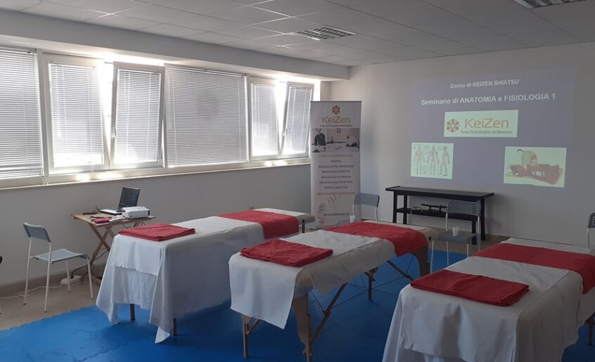
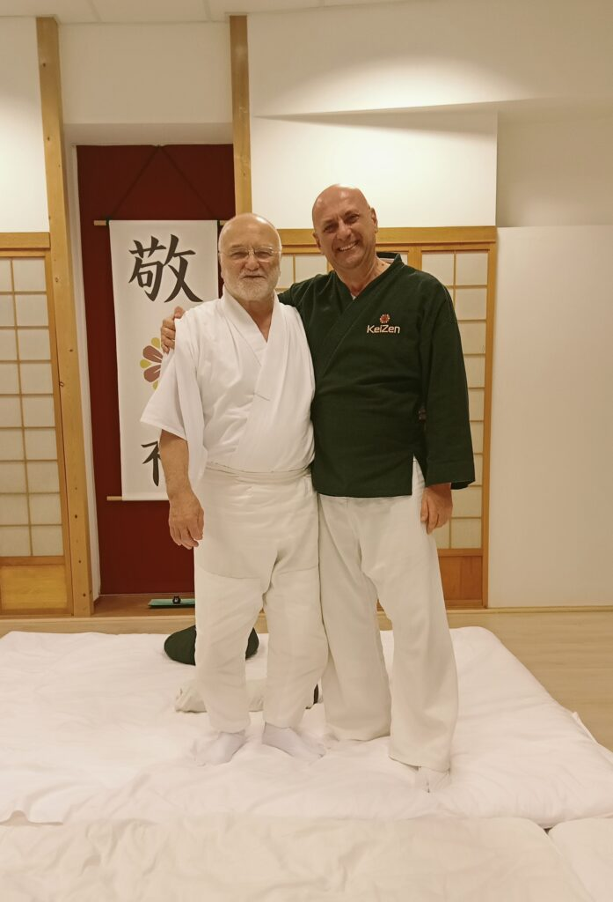
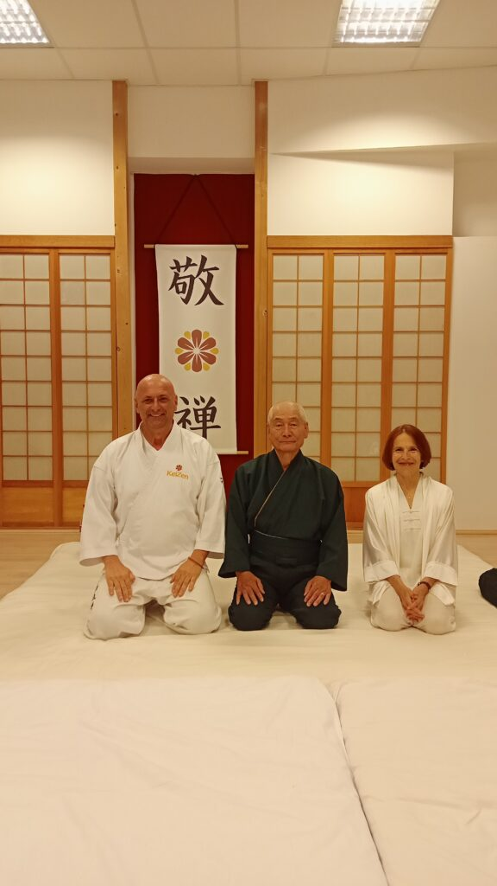
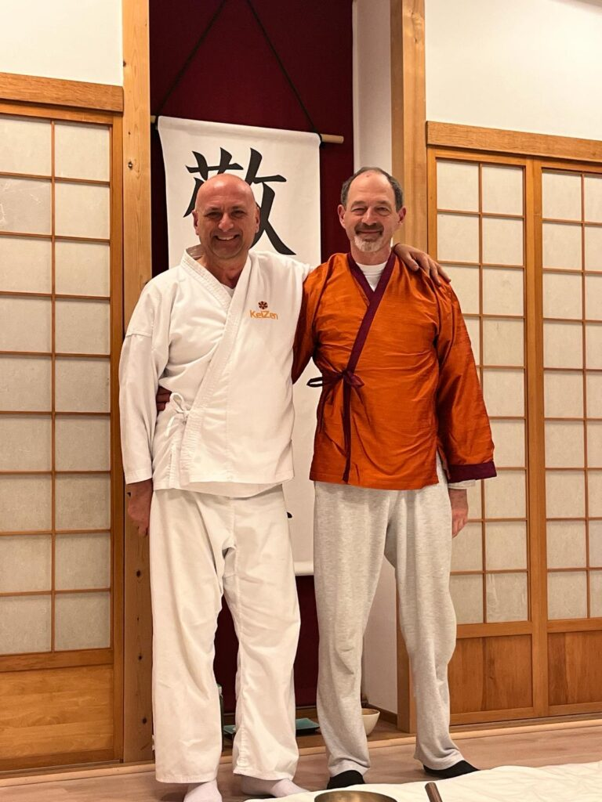
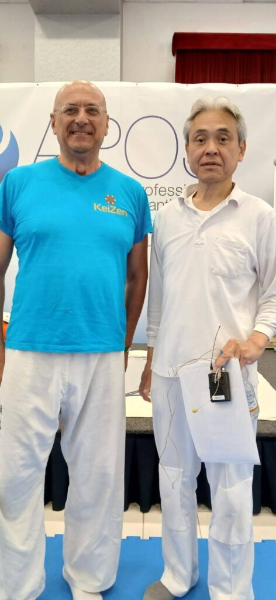
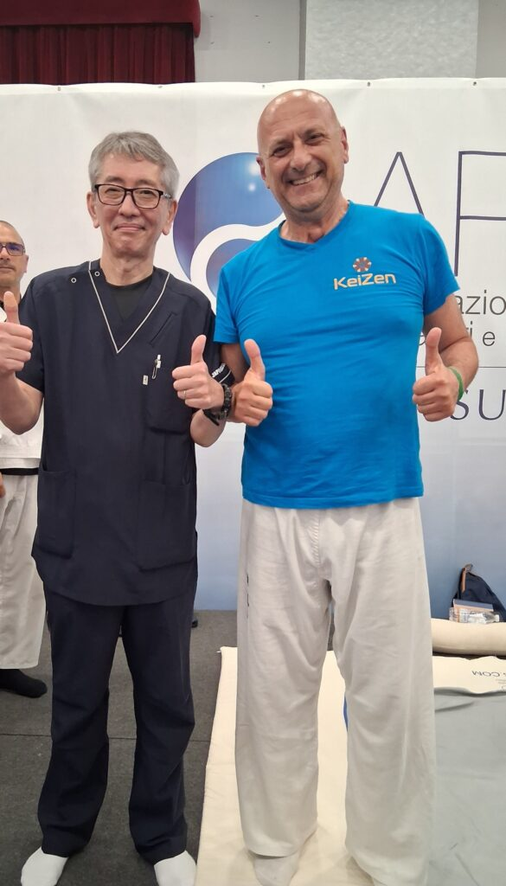
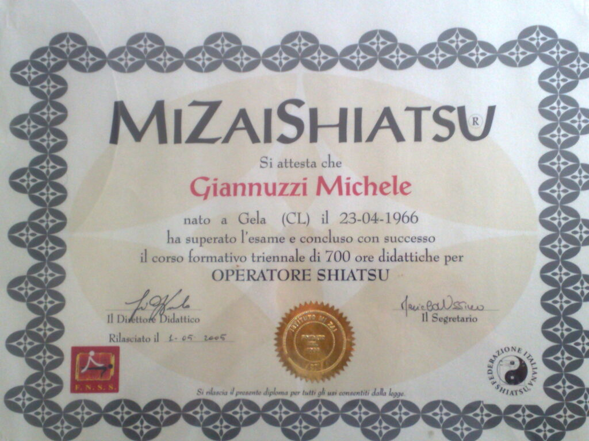
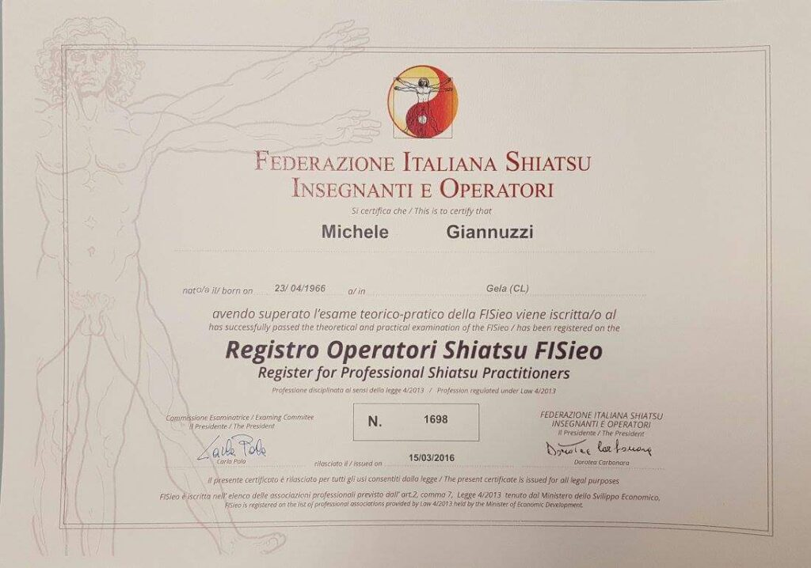

La Scuola del Benessere Consapevole
Formazione, tradizione orientale e passione dal cuore della Puglia
Il Metodo KeiZen
KEIZEN nasce dalla visione del M° Michele Giannuzzi: diffondere le discipline del benessere attraverso un percorso formativo serio, strutturato e profondamente umano. Il nome KeiZen richiama il concetto giapponese del miglioramento continuo — un principio che guida ogni aspetto della nostra scuola.
"Non formiamo solo professionisti. Formiamo persone che scelgono il benessere come missione di vita."
Con oltre dieci anni di esperienza nelle discipline orientali del benessere, KEIZEN è oggi un punto di riferimento in Puglia e Basilicata per la formazione in Shiatsu, Tecniche del Massaggio, Riflessologia, Reiki e Discipline Olistiche. La nostra scuola opera ai sensi della Legge 4/2013, garantendo un percorso formativo riconosciuto a livello professionale.
Ogni corso è condotto da docenti e insegnanti esperti nelle rispettive discipline, con un approccio che bilancia teoria, pratica clinica supervisionata e crescita personale.

La Nostra Realtà in Video

Le Attività KEIZEN

KEIZEN a Polignano a Mare
M° Michele Giannuzzi

M° Michele Giannuzzi
Con una decennale esperienza nelle tecniche del massaggio, nello Shiatsu, nella pratica delle arti marziali e nella gestione di strutture per il benessere, Michele Giannuzzi è il cuore pulsante di KEIZEN. Istruttore Shiatsu e Tecniche del Massaggio, operatore certificato FISIEO e APOS, il Maestro Giannuzzi non si limita a insegnare: pratica quotidianamente, ricevendo su appuntamento nelle sedi di Polignano a Mare, Bari, Matera e Manfredonia.
- Istruttore Shiatsu certificato
- Istruttore Tecniche del Massaggio
- Operatore Shiatsu FISIEO
- Membro APOS
- Praticante Arti Marziali
Con i Grandi Maestri






Associazioni e Impegno Sociale
APOS
Associazione Professionale Insegnanti ed Operatori Shiatsu. KEIZEN è centro di formazione associato APOS, garanzia di qualità didattica e riconoscimento professionale.
FISIEO
Federazione Italiana Shiatsu Insegnanti e Operatori. Il nostro Direttore Didattico è operatore certificato FISIEO, il massimo riconoscimento nel settore.
MSH — Missions Shiatsu Humanitaire
I nostri studenti e docenti partecipano a missioni di volontariato shiatsu in contesti di bisogno. Perché il benessere è un diritto, non un privilegio.
PugliaWellness
Il nostro network di servizi benessere per le strutture ricettive del territorio pugliese. Benessere locale, qualità professionale.